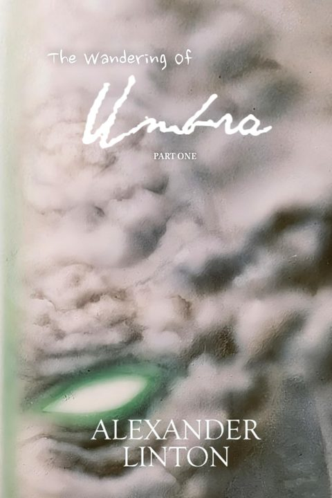
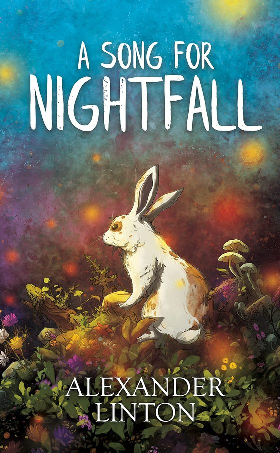

The Wandering of Umbra
A storm. A shadow in the rain. A death. When the fog arrived, everything changed.
On a remote island ravaged by famine, the old cling to beliefs they've come to resent, while the young bear the weight of vanishing futures.
All live in fear of what lurks in the fog.
Out now, November 2025. 280 pages.

"Perhaps we are just another wave, already kissing the sand..."
The Wandering of Umbra, Part One, December 2024. Paperback

A Song for Nightfall
"...lest you discover the forbidden to be rarely so without reason..."
On the border of the Ameyalli forest resides an ancient tribe. Lia and Kai are siblings who dream of entering the forbidden forest during the allure of nightfall. Night after night, they gaze longingly at the dancing lights above it and the warm glow of purple coming from within.
When Lia finally breaks away from the village's heavy hand and enters the forest, her dream is fulfilled. But at great cost.